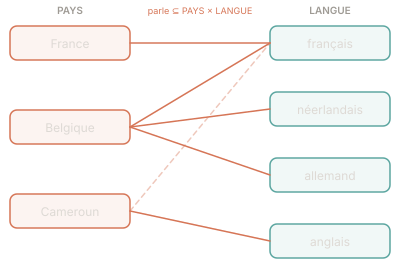

PAYS par compréhension à partir d'une relation donnéePrérequis : Cours — Relations binaires & compréhension d'ensembles
On se donne deux ensembles de base et une relation entre eux :
PAYS : ensemble de tous les pays du mondeLANGUE : ensemble de toutes les languesparle ∈ PAYS ↔ LANGUE : associant chaque pays à ses langues officielles
Ainsi (France, français) ∈ parle, (Belgique, français) ∈ parle
mais aussi (Belgique, néerlandais) ∈ parle et (Belgique, allemand) ∈ parle.
Un pays peut donc apparaître plusieurs fois dans parle, une fois par langue officielle.

La relation parle est many-to-many : Belgique pointe vers trois langues ; français est atteint par plusieurs pays. La diagonale atténuée (Cameroun → français) illustre une arête sur longue distance.
L'objectif est d'exprimer des ensembles et des relations dérivés en utilisant uniquement
PAYS, LANGUE et parle.
Compréhension : un ensemble défini par une propriété s'écrit
{x ∈ E | P(x)} — « l'ensemble des éléments x de E
vérifiant la condition P(x) ».
Membre d'une relation : (p, l) ∈ parle signifie que
la langue l est officielle dans le pays p.
Quantificateurs utiles :
∃ x ∈ E · P(x) — il existe au moins un x dans E vérifiant P∀ x ∈ E · P(x) — tout x de E vérifie P¬ P ou x ∉ S — négation, non-appartenanceExemple
Pays hispanophones :
{p ∈ PAYS | (p, espagnol) ∈ parle}
On filtre PAYS sur la condition « la paire (p, espagnol) appartient à parle ».
Exemple
Pays avec uniquement le français comme langue officielle :
{p ∈ PAYS | (p, français) ∈ parle ∧
∀ l ∈ LANGUE · (p, l) ∈ parle ⇒ l = français}
La condition universelle garantit qu'aucune autre langue n'est officielle.
Analogie
Intuition : la relation parle est comme un tableau à deux colonnes
(Pays | Langue). Définir un ensemble par compréhension revient à filtrer les lignes
selon une condition, puis à projeter sur la colonne Pays.
Demander les pays francophones, c'est garder uniquement les lignes où la langue est le français, puis lire la colonne de gauche.
Donner la représentation formelle de :
UE — l'ensemble des pays européensUE par une compréhension
sur parle. La propriété « être européen » est géographique — elle n'est pas
encodée dans parle. UE est donc une constante axiomatique
(un sous-ensemble de PAYS qu'on déclare sans le dériver).
parle.
On déclare simplement UE : ℙ PAYS (un sous-ensemble de PAYS),
sans le définir par compréhension.PAYS les éléments p tels que
la paire (p, anglais) appartient à parle.
{p ∈ PAYS | (p, ?) ∈ parle}
en remplaçant ? par le nom de la langue cible.
a) UE
UE : ℙ PAYS
« Être européen » est une propriété géographique que parle n'encode pas.
UE est donc introduite comme une constante axiomatique : on postule son
existence en tant que sous-ensemble de PAYS, sans la définir par compréhension.
C'est un choix de modélisation — l'appartenance à l'UE serait encodée dans une relation
séparée si on en avait besoin.
b) Pays anglophones
anglophones = {p ∈ PAYS | (p, anglais) ∈ parle}
L'Australie, le Canada, l'Inde et les États-Unis appartiennent à cet ensemble. Notez que ce sont tous les pays où l'anglais est officiel — pas uniquement ceux où il est majoritairement parlé.
Donner la représentation formelle de :
{p ∈ PAYS | ∃ l ∈ LANGUE · (p, l) ∈ parle}
donne les pays ayant au moins une langue officielle (soit presque tous les pays).
Pour exiger plus d'une langue, il faut deux variables de langue
distinctes liées au même pays.
∧ : (p, français) ∈ parle
et p ∉ UE.l1 et l2, avec la contrainte l1 ≠ l2.
{p ∈ PAYS | ∃ l1, l2 ∈ LANGUE · l1 ≠ l2 ∧ (p, l1) ∈ parle ∧ (p, l2) ∈ parle}
a) Pays francophones hors UE
franco_hors_UE = {p ∈ PAYS | (p, français) ∈ parle ∧ p ∉ UE}
Le Canada, la Côte d'Ivoire, le Sénégal, le Maroc appartiennent à cet ensemble.
La France et la Belgique en sont exclues (UE). La condition p ∉ UE
utilise la constante axiomatique définie en Q1a.
b) Pays possédant plus d'une langue officielle
multi_langues = {p ∈ PAYS | ∃ l1, l2 ∈ LANGUE · l1 ≠ l2 ∧ (p, l1) ∈ parle ∧ (p, l2) ∈ parle}
La Suisse (4 langues : français, allemand, italien, romanche), la Belgique (3 langues),
le Canada (2 langues : français, anglais) appartiennent à cet ensemble.
La contrainte l1 ≠ l2 est indispensable : sans elle,
on pourrait prendre l1 = l2 = français et tous les pays francophones
seraient inclus à tort.
Définir la relation même_langue ∈ PAYS ↔ PAYS
qui associe deux pays partageant au moins une langue officielle commune.
même_langue comme un ensemble de pays
(sous-ensemble de PAYS) alors que l'on demande une relation,
c'est-à-dire un sous-ensemble de PAYS × PAYS — un ensemble de paires.
La réponse doit avoir la forme {(p1, p2) ∈ PAYS × PAYS | …}.
(p1, p2) dans PAYS × PAYS telles qu'il existe
une langue l qui soit officielle à la fois pour p1
et pour p2 : (p1, l) ∈ parle ∧ (p2, l) ∈ parle.
même_langue = {(p1, p2) ∈ PAYS × PAYS | ∃ l ∈ LANGUE · (p1, l) ∈ parle ∧ (p2, l) ∈ parle}
Par exemple (France, Canada) ∈ même_langue (langue commune : français) ;
(Belgique, Pays-Bas) ∈ même_langue (langue commune : néerlandais).
(p, p) ∈ même_langue.p1 et p2 partagent une langue, alors p2 et p1 la partagent aussi.même_langue n'est donc pas une relation d'équivalence.même_langue est-elle une relation d'équivalence ? Vérifiez formellement les trois propriétés : réflexivité, symétrie, transitivité.plus_riche_en_langues ⊆ PAYS × PAYS — où (p1, p2) appartient à cette relation si p1 possède strictement plus de langues officielles que p2 ?